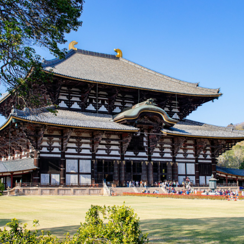

Temple Todai-ji – Le Temple Historique de Nara et le Grand Bouddha
Le Temple Todai-ji (東大寺) est l'un des temples bouddhistes les plus emblématiques et historiquement significatifs du Japon. Situé à Nara, il abrite le Grand Bouddha (Daibutsu), l'une des plus grandes statues en bronze au monde. La structure imposante en bois qui accueille le Bouddha est un témoignage extraordinaire de l'ingénierie et de l'art de l'ancien Japon.
Un Symbole de Nara
Le Todai-ji, fondé au VIIIe siècle, fut construit pour promouvoir les enseignements et la pratique du Bouddhisme. L'actuel Daibutsuden (Salle du Grand Bouddha) est l'un des plus grands bâtiments en bois du monde, avec une hauteur impressionnante de 49 mètres.
Le Grand Bouddha (Daibutsu)
Le Grand Bouddha est une statue monumentale en bronze du Bouddha Vairocana, représenté en position méditative. Avec une hauteur de 15 mètres, il est une vision à couper le souffle qui fascine les visiteurs depuis des siècles.
Comment Atteindre le Temple Todai-ji
- 🌸 Depuis la gare de Nara : Prenez l'autobus Nara Kotsu jusqu'à l'arrêt Todai-ji Daibutsuden (Salle du Grand Bouddha) – environ 10 minutes.
- 🌸 Distance à pied : Le temple se trouve à l'intérieur du Parc de Nara et est facilement accessible à pied depuis la gare.
- 🌸 Horaires d'ouverture : 7h30 – 17h30 (les horaires peuvent varier, vérifiez sur place).
- 🌸 Meilleurs points photo : La Salle du Grand Bouddha, la statue géante du Bouddha et les environs du Parc de Nara, peuplé de cerfs.
Pourquoi Visiter le Temple Todai-ji
Le Temple Todai-ji est une destination incontournable pour les passionnés d'histoire et de culture. Il offre une expérience spirituelle profonde et une occasion d'apprécier le riche patrimoine bouddhiste du Japon. L'atmosphère sereine du temple, associée à la majesté du Grand Bouddha, fait de ce site l'un des plus emblématiques du pays.
Tags : Todai-ji, temple Nara, Grand Bouddha, sites historiques Japon, Patrimoine UNESCO, Parc de Nara.
Vous Préparez Votre Visite au Temple Todai-ji ?
Pour vivre une expérience vraiment immersive et approfondie, nous vous conseillons de réserver un guide privé certifié de notre équipe. Tous nos guides sont des professionnels agréés officiellement par le gouvernement japonais et offrent des visites personnalisées selon vos intérêts. Contactez à l'avance le guide sélectionné pour confirmer la disponibilité et recevoir une assistance experte pour votre voyage.